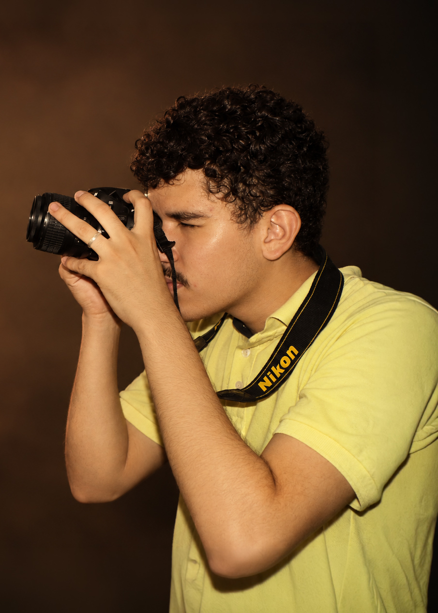

Eventos
Registros espontâneos e profissionais para transformar seu evento em uma coleção de memórias.
FOTOGRAFIA
Fotografia feita para transformar momentos, pessoas e histórias em imagens que permanecem.
MEU TRABALHO
Uma seleção dos meus trabalhos em diferentes áreas da fotografia.
SERVIÇOS
Registros espontâneos e profissionais para transformar seu evento em uma coleção de memórias.
Fotografias individuais, profissionais ou pessoais, valorizando cada detalhe.
Ensaios fotográficos pensados para criar imagens autênticas e com personalidade.
Imagens para produtos, projetos, redes sociais e divulgação profissional.

SOBRE MIM
Meu trabalho busca mais do que registrar uma imagem. Quero preservar a atmosfera, a personalidade e a história por trás de cada momento.
Da natureza aos eventos, cada fotografia é pensada para transmitir uma experiência e criar uma lembrança que continue viva.
Conheça meu trabalhoVAMOS CONVERSAR?
Entre em contato e vamos transformar seu momento em imagens.
Solicitar orçamento